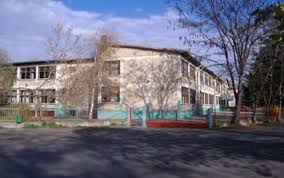
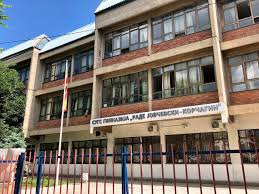

Моето основно образование започна во Љубен Лапе кое беше блиску до перфекно основно поради посветеноста на професорите и дружбата кои ги нудеше тоа училиште
Бидејки предметите математика и информатика ги совладував најдобро јас одлучив дека во средно ке се запишам во Раде Јовчевски Корчагин на математички смер ПМА и отпосле дозав дека тоа ке ми биде еден од најголемите предизвици
И како зачин на моите маки јас мислев дека ФИНКИ ке ми биде паметна одлука за факултетско образование (Би ставил и слика од Финки но немаме Зграда)